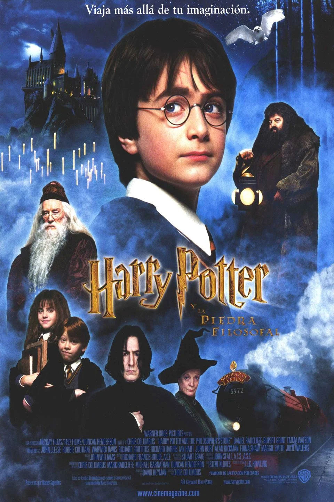

Harry Potter y la cámara secreta
Ficha técnica
- Año: 2002
- Duración: 166 min.
- País: Reino Unido
Sinopsis
Harry Potter se ha quedado huérfano y vive en casa de sus abominables tíos y el insoportable primo Dudley. Harry se siente muy triste y solo, hasta que un buen día recibe una carta que cambiará su vida para siempre. En ella le comunican que ha sido aceptado como alumno en el Colegio Hogwarts de Magia. A partir de ese momento, la suerte de Harry da un vuelco espectacular. En esa escuela tan especial aprenderá encantamientos, trucos fabulosos y tácticas de defensa contra las malas artes. Se convertirá en el campeón escolar de Quidditch, especie de fútbol aéreo que se juega montado sobre escobas, y hará un puñado de buenos amigos... aunque también algunos temibles enemigos. Pero, sobre todo, conocerá los secretos que le permitirán cumplir su destino. Pues, aunque no lo parezca a primera vista, Harry no es un chico común y corriente: ¡es un verdadero mago!
Harry Potter y la piedra filosofal es el primer libro de la heptalogía acerca del joven mago Harry Potter, escrita por J.K. Rowling. Salió a la venta el 30 de junio de 1997, y se hizo una película basada en el mismo en 2001. El libro y la película salieron en Estados Unidos bajo el título de "Harry Potter y la piedra del hechicero", pues los publicadores querían que el título mostrase que se trataba de magia y hechiceros y fuera entendible para el público, a pesar de que la Piedra Filosofal es un objeto mítico que tiene leyendas desde hace muchos años.
